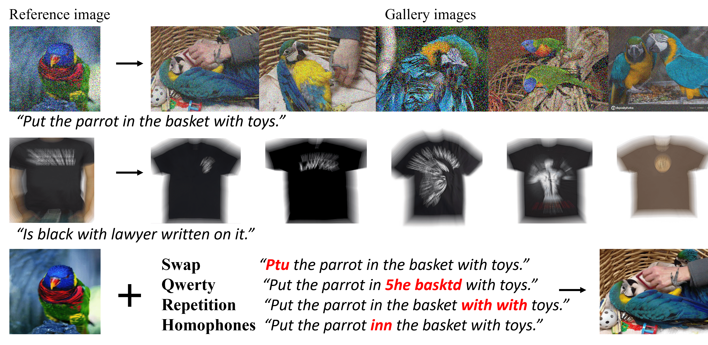
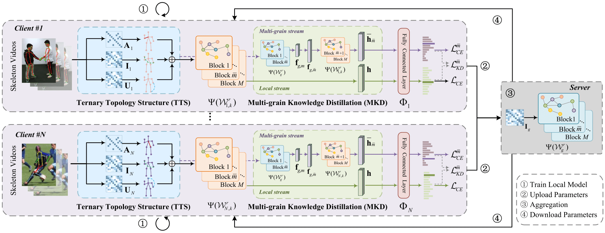
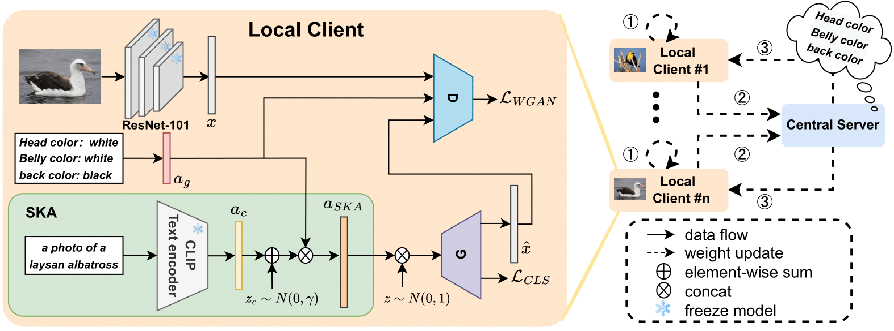
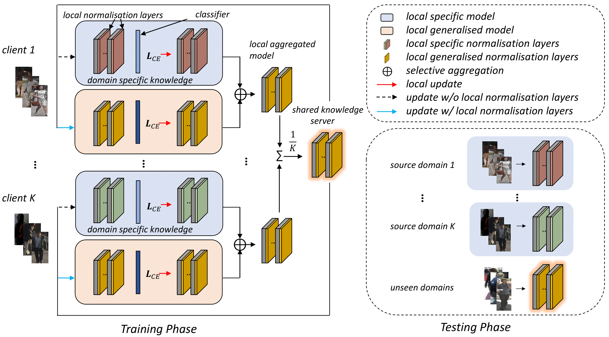

News
- 2024/11: I passed my PhD viva with minor corrections!
- 2024/10: Started a research internship at an Advanced Industry Research Lab!
-
2024/04: Organize the BMVA one day meeting:
Trustworthy Multimodal Learning with Foundation Models
together with scientist
Jindong Gu
and
Chao Zhang.
Distinguished speakers from both academic (University of Oxford) and industry (Samsung Research, Toshiba Europe, and Wayve).
The meeting is sponsored by BMVA and VIVO.
- 2023/12-2024/2: Visiting to University of Trento, worked with Prof. Nicu Sebe. The visiting is sponsored by the Alan Turing Institute for ￡4,100.
|
Publications

|
|
Plug-and-Play Clarifier: A Zero-Shot Multimodal Framework for Egocentric Intent Disambiguation.
Sicheng Yang, Yukai Huang, Weitong Cai, Shitong Sun, Hang Zhang, You He, Jiankang Deng, Jifei Song, Zhensong Zhang.
AAAI 2026
|
|

|
|
Benchmarking Robustness of Text-Image Composed Retrieval.
Shitong Sun, Jindong Gu, Shaogang Gong.
Workshop on Robustness of Few-shot and Zero-shot Learning in Foundation Models at NeurIPS 2023
[PDF]
|
|

|
|
FSAR: Federated Skeleton-based Action Recognition with Adaptive Topology Structure and Knowledge Distillation.
Jingwen Guo, Hong Liu, Shitong Sun, Tianyu Guo, Min Zhang, Chenyang Si.
International Conference on Computer Vision 2023
[PDF]
|
|

|
|
Federated Zero-Shot Learning with Mid-Level Semantic Knowledge Transfer.
Shitong Sun, Chenyang Si, Shaogang Gong, Guile Wu.
Pattern Recognition 2024
[PDF]
|
|

|
|
Decentralised Person Re-Identification with Selective Knowledge Aggregation
Shitong Sun, Guile Wu, Shaogang Gong.
British Machine Vision Conference, Online, November 2021
[PDF]
|
Experiences
- Research Scientist (Contract), Advanced Industry Research Lab in 2024.
- Teaching Fellow in QMUL: Algorithms and Data Structures (ECS529U) (2024)
- Teaching Assistant in QMUL: Deep Learning and Computer Vision (ECS795) (2021, 2022), Machine Learning (ECS708P) (2022,2023), Machine Learning for Visual Data Analysis (ECS797P) (2024)
- Full-time Computer Vision Algorithm Engineer in CRIPAC, CASIA in 2018.10-2020.9
|
Hobbies
Photography
Drawing
|
×

|